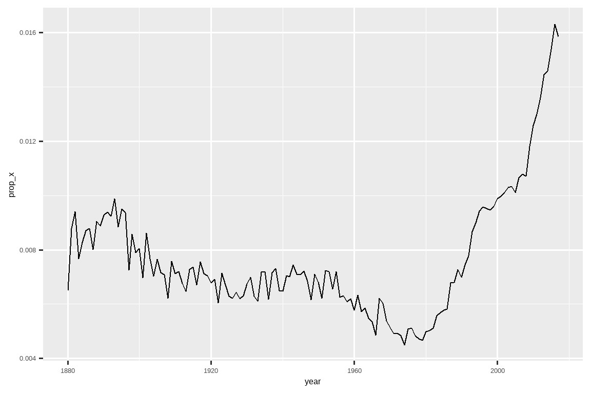

15 正则表达式
15.1 引言
在 Chapter 14 中，你学习了许多处理字符串的有用函数。本章将重点介绍使用正则表达式的函数，这是一种用于描述字符串内模式的简洁而强大的语言。术语“regular expression”有点拗口，所以大多数人将其缩写为“regex”1 或“regexp”。
本章首先介绍正则表达式的基础知识和用于数据分析的最有用的 stringr 函数。然后，我们将扩展你对模式的知识，并涵盖七个重要的新主题（转义、锚点、字符类、简写类、量词、优先级和分组）。接下来，我们将讨论 stringr 函数可以处理的其他类型的模式以及允许你调整正则表达式操作的各种“标志”。最后，我们将概述在 tidyverse 和 R base 中可能使用正则表达式的其他地方。
15.1.1 先决条件
在本章中，我们将使用 stringr 和 tidyr 中的正则表达式函数，它们都是 tidyverse 的核心成员，以及来自 babynames 包的数据。
在本章中，我们将混合使用非常简单的内联示例以便你掌握基本概念，同时也会使用 babynames 数据以及来自 stringr 的三个字符向量：
-
fruit包含了 80 种水果的名称。 -
words包含了 980 个常见的英语单词。 -
sentences包含了 720 个简短的句子。
15.2 模式基础
我们将使用 str_view() 来学习正则表达式模式是如何工作的。在上一章中，我们使用 str_view() 来更好地理解字符串与其打印表示形式的区别，现在我们将使用它的第二个参数——一个正则表达式。当提供这个参数时，str_view() 将只显示字符串向量中匹配的元素，用 <> 包围每个匹配项，并在可能的情况下用蓝色高亮显示匹配项。
最简单的模式由字母和数字组成，它们精确匹配那些字符：
str_view(fruit, "berry")
#> [6] │ bil<berry>
#> [7] │ black<berry>
#> [10] │ blue<berry>
#> [11] │ boysen<berry>
#> [19] │ cloud<berry>
#> [21] │ cran<berry>
#> ... and 8 more字母和数字精确匹配，被称为字面量字符 (literal characters)。大多数标点符号，如 .、+、*、[、] 和 ?，具有特殊含义2，被称为元字符 (metacharacters)。例如，. 将匹配任何字符3，所以 "a." 将匹配任何包含一个 “a” 后跟另一个字符的字符串：
或者我们可以找到所有包含一个 “a”，后跟三个字母，再后跟一个 “e” 的水果：
str_view(fruit, "a...e")
#> [1] │ <apple>
#> [7] │ bl<ackbe>rry
#> [48] │ mand<arine>
#> [51] │ nect<arine>
#> [62] │ pine<apple>
#> [64] │ pomegr<anate>
#> ... and 2 more量词 (Quantifiers) 控制一个模式可以匹配多少次：
-
?使一个模式成为可选的（即它匹配 0 次或 1 次） -
+让一个模式重复（即它至少匹配一次） -
*让一个模式既是可选的又可以重复（即它匹配任意次数，包括 0 次）。
# ab? 匹配一个 "a"，后面可选地跟着一个 "b"。
str_view(c("a", "ab", "abb"), "ab?")
#> [1] │ <a>
#> [2] │ <ab>
#> [3] │ <ab>b
# ab+ 匹配一个 "a"，后面跟着至少一个 "b"。
str_view(c("a", "ab", "abb"), "ab+")
#> [2] │ <ab>
#> [3] │ <abb>
# ab* 匹配一个 "a"，后面跟着任意数量的 "b"。
str_view(c("a", "ab", "abb"), "ab*")
#> [1] │ <a>
#> [2] │ <ab>
#> [3] │ <abb>字符类 (Character classes) 由 [] 定义，让你匹配一组字符中的任意一个，例如 [abcd] 匹配 “a”、“b”、“c” 或 “d”。你也可以通过以 ^ 开头来反转匹配：[^abcd] 匹配除了 “a”、“b”、“c” 或 “d” 之外的任何东西。我们可以用这个思想来找到包含一个被元音包围的 “x” 的单词，或者一个被辅音包围的 “y” 的单词：
你可以使用交替 (alternation)，即 |，来在一个或多个备选模式之间进行选择。例如，下面的模式查找包含 “apple”、“melon” 或 “nut” 的水果，或者包含重复元音的水果。
str_view(fruit, "apple|melon|nut")
#> [1] │ <apple>
#> [13] │ canary <melon>
#> [20] │ coco<nut>
#> [52] │ <nut>
#> [62] │ pine<apple>
#> [72] │ rock <melon>
#> ... and 1 more
str_view(fruit, "aa|ee|ii|oo|uu")
#> [9] │ bl<oo>d orange
#> [33] │ g<oo>seberry
#> [47] │ lych<ee>
#> [66] │ purple mangost<ee>n正则表达式非常紧凑，使用了大量的标点符号，所以初看起来可能会让人不知所措，难以阅读。别担心，多加练习你就会越来越好，简单的模式很快就会成为你的第二天性。让我们通过一些有用的 stringr 函数来开始这个过程吧。
15.3 关键函数
既然你已经掌握了正则表达式的基础知识，让我们将它们与一些 stringr 和 tidyr 函数一起使用。在接下来的部分，你将学习如何检测匹配的存在与否，如何计算匹配的数量，如何用固定的文本替换匹配项，以及如何使用模式提取文本。
15.3.1 检测匹配
str_detect() 返回一个逻辑向量，如果模式匹配字符向量中的某个元素，则为 TRUE，否则为 FALSE：
str_detect(c("a", "b", "c"), "[aeiou]")
#> [1] TRUE FALSE FALSE由于 str_detect() 返回一个与初始向量长度相同的逻辑向量，它与 filter() 配合得很好。例如，这段代码找到了所有包含小写字母 “x” 的最受欢迎的名字：
babynames |>
filter(str_detect(name, "x")) |>
count(name, wt = n, sort = TRUE)
#> # A tibble: 974 × 2
#> name n
#> <chr> <int>
#> 1 Alexander 665492
#> 2 Alexis 399551
#> 3 Alex 278705
#> 4 Alexandra 232223
#> 5 Max 148787
#> 6 Alexa 123032
#> # ℹ 968 more rows我们也可以将 str_detect() 与 summarize() 一起使用，方法是将其与 sum() 或 mean() 配对：sum(str_detect(x, pattern)) 告诉你匹配的观测数量，而 mean(str_detect(x, pattern)) 告诉你匹配的比例。例如，下面的代码片段计算并可视化了包含 “x” 的婴儿名字4的比例，并按年份进行了分解。看起来它们最近的受欢迎程度急剧上升了！
babynames |>
group_by(year) |>
summarize(prop_x = mean(str_detect(name, "x"))) |>
ggplot(aes(x = year, y = prop_x)) +
geom_line()
有两个与 str_detect() 密切相关的函数：str_subset() 和 str_which()。str_subset() 返回一个字符向量，仅包含匹配的字符串。str_which() 返回一个整数向量，给出匹配字符串的位置。
15.3.2 计数匹配
比 str_detect() 复杂一步的是 str_count()：它不是返回 TRUE 或 FALSE，而是告诉你每个字符串中有多少个匹配项。
请注意，每个匹配都从前一个匹配的末尾开始，即正则表达式的匹配从不重叠。例如，在 "abababa" 中，模式 "aba" 会匹配多少次？正则表达式会说两次，而不是三次：
很自然地，str_count() 会与 mutate() 一起使用。下面的例子使用 str_count() 和字符类来计算每个名字中元音和辅音的数量。
babynames |>
count(name) |>
mutate(
vowels = str_count(name, "[aeiou]"),
consonants = str_count(name, "[^aeiou]")
)
#> # A tibble: 97,310 × 4
#> name n vowels consonants
#> <chr> <int> <int> <int>
#> 1 Aaban 10 2 3
#> 2 Aabha 5 2 3
#> 3 Aabid 2 2 3
#> 4 Aabir 1 2 3
#> 5 Aabriella 5 4 5
#> 6 Aada 1 2 2
#> # ℹ 97,304 more rows如果你仔细观察，你会发现我们的计算有些问题：“Aaban” 包含三个 “a”，但我们的摘要只报告了两个元音。这是因为正则表达式是区分大小写的。我们有三种方法可以解决这个问题：
- 将大写元音添加到字符类中：
str_count(name, "[aeiouAEIOU]")。 - 告诉正则表达式忽略大小写：
str_count(name, regex("[aeiou]", ignore_case = TRUE))。我们将在 Section 15.5.1 中详细讨论。 - 使用
str_to_lower()将名字转换为小写：str_count(str_to_lower(name), "[aeiou]")。
这种多样化的方法在处理字符串时非常典型——通常有多种方法可以达到你的目标，要么使你的模式更复杂，要么对你的字符串进行一些预处理。如果你在尝试一种方法时遇到困难，转换思路从不同的角度解决问题通常会很有帮助。
在这种情况下，由于我们对名字应用了两个函数，我认为先转换它会更容易：
babynames |>
count(name) |>
mutate(
name = str_to_lower(name),
vowels = str_count(name, "[aeiou]"),
consonants = str_count(name, "[^aeiou]")
)
#> # A tibble: 97,310 × 4
#> name n vowels consonants
#> <chr> <int> <int> <int>
#> 1 aaban 10 3 2
#> 2 aabha 5 3 2
#> 3 aabid 2 3 2
#> 4 aabir 1 3 2
#> 5 aabriella 5 5 4
#> 6 aada 1 3 1
#> # ℹ 97,304 more rows15.3.3 替换值
除了检测和计数匹配，我们还可以用 str_replace() 和 str_replace_all() 来修改它们。str_replace() 替换第一个匹配项，而顾名思义，str_replace_all() 替换所有匹配项。
x <- c("apple", "pear", "banana")
str_replace_all(x, "[aeiou]", "-")
#> [1] "-ppl-" "p--r" "b-n-n-"str_remove() 和 str_remove_all() 是 str_replace(x, pattern, "") 的便捷快捷方式：
x <- c("apple", "pear", "banana")
str_remove_all(x, "[aeiou]")
#> [1] "ppl" "pr" "bnn"在进行数据清理时，这些函数很自然地与 mutate() 配对使用，你通常会反复应用它们来剥离不一致的格式层。
15.3.4 提取变量
我们要讨论的最后一个函数使用正则表达式将数据从一列提取到一个或多个新列中：separate_wider_regex()。它是你在 Section 14.4.2 中学到的 separate_wider_position() 和 separate_wider_delim() 函数的同类。这些函数位于 tidyr 中，因为它们操作的是（数据框的）列，而不是单个向量。
让我们创建一个简单的数据集来展示它是如何工作的。这里我们有一些源自 babynames 的数据，其中我们以一种相当奇怪的格式记录了一群人的名字、性别和年龄5：
df <- tribble(
~str,
"<Sheryl>-F_34",
"<Kisha>-F_45",
"<Brandon>-N_33",
"<Sharon>-F_38",
"<Penny>-F_58",
"<Justin>-M_41",
"<Patricia>-F_84",
)要使用 separate_wider_regex() 提取这些数据，我们只需要构建一个匹配每个部分的正则表达式序列。如果我们希望该部分的内容出现在输出中，我们就给它一个名字：
df |>
separate_wider_regex(
str,
patterns = c(
"<",
name = "[A-Za-z]+",
">-",
gender = ".",
"_",
age = "[0-9]+"
)
)
#> # A tibble: 7 × 3
#> name gender age
#> <chr> <chr> <chr>
#> 1 Sheryl F 34
#> 2 Kisha F 45
#> 3 Brandon N 33
#> 4 Sharon F 38
#> 5 Penny F 58
#> 6 Justin M 41
#> # ℹ 1 more row如果匹配失败，你可以使用 too_few = "debug" 来找出问题所在，就像 separate_wider_delim() 和 separate_wider_position() 一样。
15.3.5 练习
哪个婴儿名字的元音最多？哪个名字的元音比例最高？（提示：分母是什么？）
将
"a/b/c/d/e"中所有的正斜杠替换为反斜杠。如果你试图通过将所有反斜杠替换为正斜杠来撤销转换，会发生什么？（我们很快就会讨论这个问题。）使用
str_replace_all()实现一个简单版本的str_to_lower()。创建一个正则表达式，以匹配你所在国家通常书写的电话号码。
15.4 模式细节
既然你已经了解了模式语言的基础知识，以及如何将它与一些 stringr 和 tidyr 函数一起使用，现在是时候深入了解更多细节了。首先，我们将从转义 (escaping) 开始，它允许你匹配那些原本会被特殊处理的元字符。接下来，你将学习锚点 (anchors)，它允许你匹配字符串的开头或结尾。然后，你将学习更多关于字符类 (character classes) 和它们的快捷方式，这使你能够匹配一个集合中的任何字符。接下来，你将学习量词 (quantifiers) 的最后细节，它控制一个模式可以匹配多少次。然后，我们必须涵盖重要（但复杂）的操作符优先级 (operator precedence) 和括号。最后，我们将以分组 (grouping) 模式组件的一些细节来结束。
我们在这里使用的术语是每个组件的专业名称。它们并不总是最能说明其用途，但如果你以后想用谷歌搜索更多细节，了解正确的术语会非常有帮助。
15.4.1 转义
为了匹配一个字面意义上的 .，你需要一个转义 (escape)，它告诉正则表达式要字面匹配元字符6。像字符串一样，正则表达式也使用反斜杠进行转义。所以，要匹配一个 .，你需要正则表达式 \.。不幸的是，这带来了一个问题。我们用字符串来表示正则表达式，而 \ 在字符串中也用作转义符号。所以要创建正则表达式 \.，我们需要字符串 "\\."，如下例所示。
在本书中，我们通常会不带引号地写正则表达式，比如 \.。如果我们需要强调你实际会输入什么，我们会用引号把它括起来，并加上额外的转义，比如 "\\."。
如果 \ 在正则表达式中用作转义字符，那么你如何匹配一个字面意义上的 \ 呢？嗯，你需要对它进行转义，创建正则表达式 \\。要创建那个正则表达式，你需要使用一个字符串，而字符串也需要对 \ 进行转义。这意味着要匹配一个字面意义上的 \，你需要写 "\\\\" —— 你需要四个反斜杠来匹配一个！
或者，你可能会发现使用你在 Section 14.2.2 中学到的原始字符串更容易。那样可以让你避免一层转义：
str_view(x, r"{\\}")
#> [1] │ a<\>b如果你想匹配一个字面意义上的 .、$、|、*、+、?、{、}、(、)，除了使用反斜杠转义外，还有一种替代方法：你可以使用字符类：[.]、[$]、[|]……它们都匹配字面值。
15.4.2 锚点
默认情况下，正则表达式会匹配字符串的任何部分。如果你想在开头或结尾进行匹配，你需要使用锚点 (anchor) 来固定正则表达式，使用 ^ 匹配开头，或 $ 匹配结尾：
人们很容易认为 $ 应该匹配字符串的开头，因为我们就是这样写美元金额的，但这并不是正则表达式的意图。
要强制一个正则表达式只匹配完整的字符串，用 ^ 和 $ 将它锚定：
你也可以用 \b 来匹配单词边界（即单词的开头或结尾）。这在 RStudio 的查找和替换工具中特别有用。例如，要查找 sum() 的所有用法，你可以搜索 \bsum\b 来避免匹配 summarize、summary、rowsum 等等：
当单独使用时，锚点会产生一个零宽度的匹配：
这有助于你理解当你替换一个独立的锚点时会发生什么：
str_replace_all("abc", c("$", "^", "\\b"), "--")
#> [1] "abc--" "--abc" "--abc--"15.4.3 字符类
字符类 (character class)，或称字符集 (set)，允许你匹配集合中的任何一个字符。正如我们上面讨论的，你可以用 [] 来构建自己的集合，其中 [abc] 匹配 “a”、“b” 或 “c”，而 [^abc] 匹配除了 “a”、“b” 或 “c” 之外的任何字符。除了 ^，[] 内部还有两个其他具有特殊含义的字符：
-
-定义一个范围，例如[a-z]匹配任何小写字母，[0-9]匹配任何数字。 -
\对特殊字符进行转义，所以[\^\-\]]匹配^、-或]。
这里有几个例子：
x <- "abcd ABCD 12345 -!@#%."
str_view(x, "[abc]+")
#> [1] │ <abc>d ABCD 12345 -!@#%.
str_view(x, "[a-z]+")
#> [1] │ <abcd> ABCD 12345 -!@#%.
str_view(x, "[^a-z0-9]+")
#> [1] │ abcd< ABCD >12345< -!@#%.>
# 你需要转义才能匹配在 [] 中有特殊含义的字符
str_view("a-b-c", "[a-c]")
#> [1] │ <a>-<b>-<c>
str_view("a-b-c", "[a\\-c]")
#> [1] │ <a><->b<-><c>一些字符类非常常用，以至于它们有自己的快捷方式。你已经见过了 .，它匹配除了换行符之外的任何字符。还有三对特别有用的快捷方式7：
-
\d匹配任何数字；\D匹配任何非数字的字符。 -
\s匹配任何空白字符（例如，空格、制表符、换行符）；\S匹配任何非空白字符的字符。 -
\w匹配任何“单词”字符，即字母和数字；\W匹配任何“非单词”字符。
下面的代码用一系列字母、数字和标点符号演示了这六个快捷方式。
x <- "abcd ABCD 12345 -!@#%."
str_view(x, "\\d+")
#> [1] │ abcd ABCD <12345> -!@#%.
str_view(x, "\\D+")
#> [1] │ <abcd ABCD >12345< -!@#%.>
str_view(x, "\\s+")
#> [1] │ abcd< >ABCD< >12345< >-!@#%.
str_view(x, "\\S+")
#> [1] │ <abcd> <ABCD> <12345> <-!@#%.>
str_view(x, "\\w+")
#> [1] │ <abcd> <ABCD> <12345> -!@#%.
str_view(x, "\\W+")
#> [1] │ abcd< >ABCD< >12345< -!@#%.>15.4.4 量词
量词 (Quantifiers) 控制一个模式匹配的次数。在 Section 15.2 中，你学习了 ?（0 或 1 次匹配）、+（1 次或多次匹配）和 *（0 次或多次匹配）。例如，colou?r 会匹配美式或英式拼写，\d+ 会匹配一个或多个数字，\s? 会可选地匹配一个空白字符。你也可以用 {} 来精确指定匹配的次数：
-
{n}精确匹配 n 次。 -
{n,}至少匹配 n 次。 -
{n,m}匹配 n 到 m 次之间。
15.4.5 操作符优先级和括号
ab+ 匹配什么？是匹配一个 “a” 后面跟着一个或多个 “b”，还是匹配 “ab” 重复任意次数？^a|b$ 匹配什么？是匹配完整的字符串 a 或完整的字符串 b，还是匹配以 a 开头的字符串或以 b 结尾的字符串？
这些问题的答案由操作符优先级决定，类似于你在学校可能学过的 PEMDAS 或 BEDMAS 规则。你知道 a + b * c 等同于 a + (b * c) 而不是 (a + b) * c，因为 * 的优先级高于 +：你先计算 * 再计算 +。
同样，正则表达式也有自己的优先级规则：量词的优先级高，而交替的优先级低，这意味着 ab+ 等同于 a(b+)，^a|b$ 等同于 (^a)|(b$)。就像代数一样，你可以使用括号来覆盖常规顺序。但与代数不同的是，你不太可能记住正则表达式的优先级规则，所以请随意大量使用括号。
15.4.6 分组和捕获
除了覆盖操作符优先级，括号还有另一个重要作用：它们创建捕获组 (capturing groups)，允许你使用匹配的子组件。
使用捕获组的第一种方法是在匹配内部通过反向引用 (back reference) 来引用它：\1 引用第一个括号中包含的匹配，\2 引用第二个括号中的匹配，依此类推。例如，下面的模式找到所有具有重复字母对的水果：
str_view(fruit, "(..)\\1")
#> [4] │ b<anan>a
#> [20] │ <coco>nut
#> [22] │ <cucu>mber
#> [41] │ <juju>be
#> [56] │ <papa>ya
#> [73] │ s<alal> berry而这个模式找到所有以相同字母对开头和结尾的单词：
str_view(words, "^(..).*\\1$")
#> [152] │ <church>
#> [217] │ <decide>
#> [617] │ <photograph>
#> [699] │ <require>
#> [739] │ <sense>你也可以在 str_replace() 中使用反向引用。例如，这段代码交换了 sentences 中第二个和第三个单词的顺序：
sentences |>
str_replace("(\\w+) (\\w+) (\\w+)", "\\1 \\3 \\2") |>
str_view()
#> [1] │ The canoe birch slid on the smooth planks.
#> [2] │ Glue sheet the to the dark blue background.
#> [3] │ It's to easy tell the depth of a well.
#> [4] │ These a days chicken leg is a rare dish.
#> [5] │ Rice often is served in round bowls.
#> [6] │ The of juice lemons makes fine punch.
#> ... and 714 more如果你想提取每个组的匹配项，你可以使用 str_match()。但是 str_match() 返回一个矩阵，所以处理起来不是特别容易8：
你可以将它转换为一个 tibble 并命名列：
sentences |>
str_match("the (\\w+) (\\w+)") |>
as_tibble(.name_repair = "minimal") |>
set_names("match", "word1", "word2")
#> # A tibble: 720 × 3
#> match word1 word2
#> <chr> <chr> <chr>
#> 1 the smooth planks smooth planks
#> 2 the sheet to sheet to
#> 3 the depth of depth of
#> 4 <NA> <NA> <NA>
#> 5 <NA> <NA> <NA>
#> 6 <NA> <NA> <NA>
#> # ℹ 714 more rows但这样一来，你基本上是自己重新创建了 separate_wider_regex() 的一个版本。实际上，在幕后，separate_wider_regex() 将你的模式向量转换为一个使用分组来捕获命名组件的单一正则表达式。
偶尔，你会想使用括号而不创建匹配组。你可以用 (?:) 创建一个非捕获组。
15.4.7 练习
你将如何匹配字面字符串
"'\"？"$^$"呢？解释为什么这些模式中的每一个都不匹配
\："\"、"\\"、"\\\"。-
给定
stringr::words中的常用词语料库，创建正则表达式以找到所有满足以下条件的单词：- 以 “y” 开头。
- 不以 “y” 开头。
- 以 “x” 结尾。
- 长度恰好为三个字母。（不要用
str_length()作弊！） - 有七个或更多字母。
- 包含一个元音-辅音对。
- 连续包含至少两个元音-辅音对。
- 仅由重复的元音-辅音对组成。
为以下每个单词创建 11 个正则表达式，以匹配它们的英式或美式拼写：airplane/aeroplane, aluminum/aluminium, analog/analogue, ass/arse, center/centre, defense/defence, donut/doughnut, gray/grey, modeling/modelling, skeptic/sceptic, summarize/summarise。尝试制作可能的最短的正则表达式！
交换
words中的首字母和尾字母。这些字符串中有哪些仍然是words中的单词？-
用文字描述这些正则表达式匹配什么：（仔细阅读以判断每个条目是正则表达式还是定义正则表达式的字符串。）
^.*$"\\{.+\\}"\d{4}-\d{2}-\d{2}"\\\\{4}"\..\..\..(.)\1\1"(..)\\1"
解决 https://regexcrossword.com/challenges/beginner 上的初学者正则表达式填字游戏。
15.5 模式控制
通过使用模式对象而不是仅仅一个字符串，可以对匹配的细节进行额外的控制。这允许你控制所谓的正则表达式标志，并匹配各种类型的固定字符串，如下所述。
15.5.1 正则表达式标志
有许多设置可以用来控制正则表达式的细节。这些设置在其他编程语言中通常被称为标志 (flags)。在 stringr 中，你可以通过将模式包装在对 regex() 的调用中来使用这些设置。最有用的标志可能就是 ignore_case = TRUE，因为它允许字符匹配其大写或小写形式：
如果你正在处理大量多行字符串（即包含 \n 的字符串），dotall 和 multiline 可能也很有用：
-
dotall = TRUE让.匹配所有东西，包括\n： -
multiline = TRUE使^和$匹配每行的开始和结束，而不是整个字符串的开始和结束：
最后，如果你正在编写一个复杂的正则表达式，并且担心将来可能无法理解它，你可能会尝试 comments = TRUE。它会调整模式语言，以忽略空格和换行符，以及 # 之后的所有内容。这允许你使用注释和空白来使复杂的正则表达式更易于理解9，如下例所示：
phone <- regex(
r"(
\(? # 可选的左括号
(\d{3}) # 区号
[)\-]? # 可选的右括号或破折号
\ ? # 可选的空格
(\d{3}) # 另外三个数字
[\ -]? # 可选的空格或破折号
(\d{4}) # 另外四个数字
)",
comments = TRUE
)
str_extract(c("514-791-8141", "(123) 456 7890", "123456"), phone)
#> [1] "514-791-8141" "(123) 456 7890" NA如果你使用注释，并且想要匹配空格、换行符或 #，你需要用 \ 来转义它。
15.5.2 固定匹配
你可以通过使用 fixed() 来选择不使用正则表达式规则：
fixed() 还让你能够忽略大小写：
如果你正在处理非英语文本，你可能更想要 coll() 而不是 fixed()，因为它实现了你指定的 locale 所使用的完整大写规则。有关区域设置的更多详细信息，请参见 Section 14.6。
15.6 实践
为了将这些想法付诸实践，我们接下来将解决一些半真实的问题。我们将讨论三种通用技术：
- 通过创建简单的正向和反向控制来检查你的工作
- 将正则表达式与布尔代数组合
- 使用字符串操作创建复杂的模式
15.6.1 检查你的工作
首先，让我们找到所有以 “The” 开头的句子。仅仅使用 ^ 锚点是不够的：
str_view(sentences, "^The")
#> [1] │ <The> birch canoe slid on the smooth planks.
#> [4] │ <The>se days a chicken leg is a rare dish.
#> [6] │ <The> juice of lemons makes fine punch.
#> [7] │ <The> box was thrown beside the parked truck.
#> [8] │ <The> hogs were fed chopped corn and garbage.
#> [11] │ <The> boy was there when the sun rose.
#> ... and 271 more因为那个模式也匹配了以 They 或 These 等单词开头的句子。我们需要确保 “e” 是单词中的最后一个字母，我们可以通过添加一个单词边界来实现：
str_view(sentences, "^The\\b")
#> [1] │ <The> birch canoe slid on the smooth planks.
#> [6] │ <The> juice of lemons makes fine punch.
#> [7] │ <The> box was thrown beside the parked truck.
#> [8] │ <The> hogs were fed chopped corn and garbage.
#> [11] │ <The> boy was there when the sun rose.
#> [13] │ <The> source of the huge river is the clear spring.
#> ... and 250 more那么，找到所有以代词开头的句子呢？
str_view(sentences, "^She|He|It|They\\b")
#> [3] │ <It>'s easy to tell the depth of a well.
#> [15] │ <He>lp the woman get back to her feet.
#> [27] │ <He>r purse was full of useless trash.
#> [29] │ <It> snowed, rained, and hailed the same morning.
#> [63] │ <He> ran half way to the hardware store.
#> [90] │ <He> lay prone and hardly moved a limb.
#> ... and 57 more快速检查结果显示我们得到了一些错误的匹配。这是因为我们忘记了使用括号：
str_view(sentences, "^(She|He|It|They)\\b")
#> [3] │ <It>'s easy to tell the depth of a well.
#> [29] │ <It> snowed, rained, and hailed the same morning.
#> [63] │ <He> ran half way to the hardware store.
#> [90] │ <He> lay prone and hardly moved a limb.
#> [116] │ <He> ordered peach pie with ice cream.
#> [127] │ <It> caught its hind paw in a rusty trap.
#> ... and 51 more你可能会想，如果这样的错误没有出现在前几个匹配中，你该如何发现它。一个好的技术是创建一些正向和反向的匹配，并用它们来测试你的模式是否按预期工作：
pos <- c("He is a boy", "She had a good time")
neg <- c("Shells come from the sea", "Hadley said 'It's a great day'")
pattern <- "^(She|He|It|They)\\b"
str_detect(pos, pattern)
#> [1] TRUE TRUE
str_detect(neg, pattern)
#> [1] FALSE FALSE通常，想出好的正向例子比想出反向例子要容易得多，因为在你对正则表达式足够熟练以预测你的弱点在哪里之前，需要一段时间。尽管如此，它们仍然很有用：在你解决问题的过程中，你可以慢慢积累你的错误集合，确保你永远不会犯同样的错误两次。
15.6.2 布尔运算
假设我们想找到只包含辅音的单词。一种技术是创建一个包含除元音外的所有字母的字符类（[^aeiou]），然后让它匹配任意数量的字母（[^aeiou]+），最后通过锚定到开头和结尾来强制它匹配整个字符串（^[^aeiou]+$）：
str_view(words, "^[^aeiou]+$")
#> [123] │ <by>
#> [249] │ <dry>
#> [328] │ <fly>
#> [538] │ <mrs>
#> [895] │ <try>
#> [952] │ <why>但是你可以通过反向思考来使这个问题变得简单一些。与其寻找只包含辅音的单词，我们可以寻找不包含任何元音的单词：
str_view(words[!str_detect(words, "[aeiou]")])
#> [1] │ by
#> [2] │ dry
#> [3] │ fly
#> [4] │ mrs
#> [5] │ try
#> [6] │ why每当你处理逻辑组合时，这都是一种有用的技术，特别是那些涉及“与”或“非”的组合。例如，假设你想找到所有包含 “a” 和 “b” 的单词。正则表达式中没有内置的“与”操作符，所以我们必须通过寻找所有包含一个 “a” 后面跟着一个 “b” 的单词，或者一个 “b” 后面跟着一个 “a” 的单词来解决它：
str_view(words, "a.*b|b.*a")
#> [2] │ <ab>le
#> [3] │ <ab>out
#> [4] │ <ab>solute
#> [62] │ <availab>le
#> [66] │ <ba>by
#> [67] │ <ba>ck
#> ... and 24 more将两次 str_detect() 调用的结果组合起来更简单：
words[str_detect(words, "a") & str_detect(words, "b")]
#> [1] "able" "about" "absolute" "available" "baby" "back"
#> [7] "bad" "bag" "balance" "ball" "bank" "bar"
#> [13] "base" "basis" "bear" "beat" "beauty" "because"
#> [19] "black" "board" "boat" "break" "brilliant" "britain"
#> [25] "debate" "husband" "labour" "maybe" "probable" "table"如果我们想看看是否有包含所有元音的单词呢？如果我们用模式来做，我们需要生成 5!（120）种不同的模式：
words[str_detect(words, "a.*e.*i.*o.*u")]
# ...
words[str_detect(words, "u.*o.*i.*e.*a")]将五次 str_detect() 调用的结果组合起来要简单得多：
words[
str_detect(words, "a") &
str_detect(words, "e") &
str_detect(words, "i") &
str_detect(words, "o") &
str_detect(words, "u")
]
#> character(0)总的来说，如果你在尝试创建一个单一的正则表达式来解决问题时遇到困难，退一步思考一下，你是否可以把问题分解成更小的部分，在解决下一个挑战之前先解决每一个挑战。
15.6.3 用代码创建模式
如果我们想找到所有提到某种颜色的 sentences 呢？基本思想很简单：我们只需将交替与单词边界结合起来。
str_view(sentences, "\\b(red|green|blue)\\b")
#> [2] │ Glue the sheet to the dark <blue> background.
#> [26] │ Two <blue> fish swam in the tank.
#> [92] │ A wisp of cloud hung in the <blue> air.
#> [148] │ The spot on the blotter was made by <green> ink.
#> [160] │ The sofa cushion is <red> and of light weight.
#> [174] │ The sky that morning was clear and bright <blue>.
#> ... and 20 more但随着颜色数量的增加，手动构建这个模式会很快变得乏味。如果我们能把颜色存储在一个向量里，那不是很好吗？
rgb <- c("red", "green", "blue")嗯，我们可以！我们只需要用 str_c() 和 str_flatten() 从向量创建模式：
str_c("\\b(", str_flatten(rgb, "|"), ")\\b")
#> [1] "\\b(red|green|blue)\\b"如果我们有一个好的颜色列表，我们可以使这个模式更全面。我们可以从 R 中可用于绘图的内置颜色列表开始：
但让我们首先消除带编号的变体：
cols <- colors()
cols <- cols[!str_detect(cols, "\\d")]
str_view(cols)
#> [1] │ white
#> [2] │ aliceblue
#> [3] │ antiquewhite
#> [4] │ aquamarine
#> [5] │ azure
#> [6] │ beige
#> ... and 137 more然后我们可以把它变成一个巨大的模式。我们在这里不显示这个模式，因为它太大了，但你可以看到它的工作效果：
pattern <- str_c("\\b(", str_flatten(cols, "|"), ")\\b")
str_view(sentences, pattern)
#> [2] │ Glue the sheet to the dark <blue> background.
#> [12] │ A rod is used to catch <pink> <salmon>.
#> [26] │ Two <blue> fish swam in the tank.
#> [66] │ Cars and busses stalled in <snow> drifts.
#> [92] │ A wisp of cloud hung in the <blue> air.
#> [112] │ Leaves turn <brown> and <yellow> in the fall.
#> ... and 57 more在这个例子中，cols 只包含数字和字母，所以你不需要担心元字符。但总的来说，每当你从现有字符串创建模式时，明智的做法是先用 str_escape() 处理它们，以确保它们是字面匹配。
15.6.4 练习
-
对于以下每个挑战，尝试使用单一的正则表达式和多个
str_detect()调用的组合来解决它。- 找到所有以
x开头或结尾的words。 - 找到所有以元音开头并以辅音结尾的
words。 - 是否有任何
words至少包含每种不同元音中的一个？
- 找到所有以
构建模式来寻找支持和反对“i before e except after c”（i 在 e 前，c 后除外）这一规则的证据。
colors()包含一些修饰词，如 “lightgray” 和 “darkblue”。你如何能自动识别这些修饰词？（想想你可能如何检测然后移除被修饰的颜色）。创建一个正则表达式，以查找任何 R base 数据集。你可以通过
data()函数的一种特殊用法获取这些数据集的列表：data(package = "datasets")$results[, "Item"]。注意，一些旧的数据集是单个向量；它们在括号中包含了分组“数据框”的名称，所以你需要把那些去掉。
15.7 其他地方的正则表达式
就像在 stringr 和 tidyr 函数中一样，R 中还有许多其他地方可以使用正则表达式。以下各节描述了在更广泛的 tidyverse 和 R base 中的一些其他有用函数。
15.7.1 tidyverse
还有三个特别有用的地方，你可能想使用正则表达式：
matches(pattern)会选择所有名称与所提供模式匹配的变量。它是一个“tidyselect”函数，你可以在任何选择变量的 tidyverse 函数中使用（例如，select()、rename_with()和across()）。pivot_longer()的names_pattern参数接受一个正则表达式向量，就像separate_wider_regex()一样。当从具有复杂结构的变量名中提取数据时，它很有用。separate_longer_delim()和separate_wider_delim()中的delim参数通常匹配一个固定的字符串，但你可以使用regex()使其匹配一个模式。例如，如果你想匹配一个逗号，后面可选地跟着一个空格，即regex(", ?")，这就很有用。
15.7.2 Base R
apropos(pattern) 在全局环境中搜索所有与给定模式匹配的可用对象。如果你不太记得一个函数的名字，这很有用：
apropos("replace")
#> [1] "%+replace%" "replace" "replace_na"
#> [4] "setReplaceMethod" "str_replace" "str_replace_all"
#> [7] "str_replace_na" "theme_replace"list.files(path, pattern) 列出 path 中所有与正则表达式 pattern 匹配的文件。例如，你可以用以下方式找到当前目录中所有的 R Markdown 文件：
head(list.files(pattern = "\\.Rmd$"))
#> character(0)值得注意的是，base R 使用的模式语言与 stringr 使用的略有不同。这是因为 stringr 是建立在 stringi 包之上的，而 stringi 又是建立在 ICU 引擎之上的，而 base R 函数则使用 TRE 引擎或 PCRE 引擎，这取决于你是否设置了 perl = TRUE。幸运的是，正则表达式的基础知识已经非常成熟，当使用你在本书中学到的模式时，你几乎不会遇到什么变化。只有当你开始依赖高级功能，如复杂的 Unicode 字符范围或使用 (?…) 语法的特殊功能时，你才需要注意这种差异。
15.8 总结
由于每个标点符号都可能被赋予了多重含义，正则表达式是现存最紧凑的语言之一。它们起初确实令人困惑，但随着你训练你的眼睛去阅读它们，你的大脑去理解它们，你就解锁了一项强大的技能，可以在 R 和许多其他地方使用。
在本章中，你通过学习最有用的 stringr 函数和正则表达式语言最重要的组成部分，开始了成为正则表达式大师的旅程。而且还有大量的资源可以让你学到更多。
一个好的起点是 vignette("regular-expressions", package = "stringr")：它记录了 stringr 支持的全部语法。另一个有用的参考是 https://www.regular-expressions.info/。它不是 R 特有的，但你可以用它来学习正则表达式最高级的功能以及它们在幕后是如何工作的。
同样值得了解的是，stringr 是在 Marek Gagolewski 的 stringi 包之上实现的。如果你在 stringr 中找不到能满足你需要的功能，不要害怕去 stringi 中寻找。你会发现 stringi 很容易上手，因为它遵循了许多与 stringr 相同的约定。
在下一章，我们将讨论一个与字符串密切相关的数据结构：因子。因子在 R 中用于表示分类数据，即具有固定的、已知的可能值集合的数据，这些值由一个字符串向量来标识。
你可以读作硬 g（reg-x）或软 g（rej-x）。↩︎
你将在 Section 15.4.1 中学习如何转义这些特殊含义。↩︎
嗯，除了
\n之外的任何字符。↩︎这给了我们包含 “x” 的名字的比例；如果你想要的是名字中含 x 的婴儿的比例，你需要进行加权平均。↩︎
我们希望可以向你保证，在现实生活中你永远不会看到这么奇怪的东西，但不幸的是，在你的职业生涯中，你很可能会看到更奇怪的！↩︎
元字符的完整集合是
.^$\|*+?{}[]()↩︎记住，要创建一个包含
\d或\s的正则表达式，你需要为字符串转义\，所以你会输入"\\d"或"\\s"。↩︎主要是因为我们在本书中从未讨论过矩阵！↩︎
comments = TRUE与原始字符串结合使用尤其有效，就像我们在这里使用的那样。↩︎